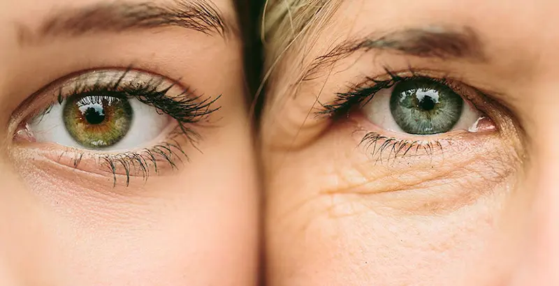
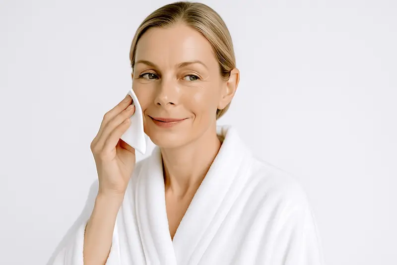
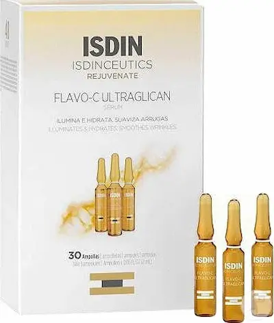
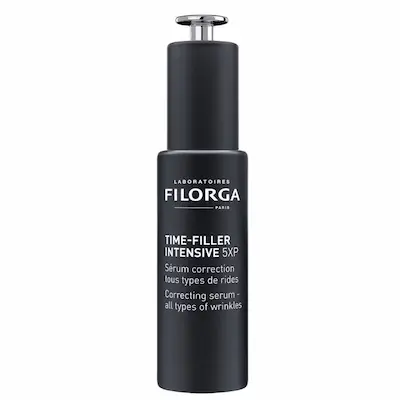

Stop-cadru pentru tinerețe: protecția colagenului împotriva razelor UV și prevenirea ridurilor solare profunde.Ce este fotoîmbătrânirea și prin ce se diferențiază de îmbătrânirea cronologică?
Fotoîmbătrânirea reprezintă degradarea prematură a pielii cauzată de expunerea cumulativă (cumulată) la razele solare. În timp ce îmbătrânirea naturală este predeterminată genetic, fotoîmbătrânirea este un agresor extern care accelerează ceasul biologic al pielii de câteva ori.
Este esențial să facem distincția: dacă crono-îmbătrânirea se manifestă printr-o scădere graduală a tonusului, fotoîmbătrânirea reprezintă o deteriorare severă a proteinelor structurale. În climatul însorit al Moldovei și României, observăm frecvent „efectul de îmbătrânire timpurie”, când deja la 30 de ani pielea își pierde strălucirea, devine mai densă și se acoperă de o rețea de riduri fine din cauza stresului UV cronic acumulat în lunile toride de vară.
Mecanismul de degradare: cum soarele distruge structura de colagen
Principalul vinovat sunt razele de tip UVA. Acestea nu provoacă arsuri imediate, dar pătrund adânc în dermă, declanșând sinteza unor enzime care practic „devorează” colagenul și elastina. Acest proces se numește elastoză solară: fibrele sănătoase sunt înlocuite cu unele defectuoase, motiv pentru care pielea își pierde capacitatea de a „reveni” la formă și de a fi elastică.
Pentru regiunea noastră, un factor critic este combinația dintre aerul uscat și indicele ultraviolet ridicat. Stresul oxidativ provocat de soare epuizează rezervele proprii de antioxidanți ale pielii. În condițiile climatului urban (praf și poluare), acest proces se agravează: particulele poluante se depun pe piele și, sub influența razelor UV, devin și mai toxice, accelerând apariția ridurilor adânci și a unui ten tern, lipsit de vitalitate.
Reguli de bază în lupta împotriva fotoîmbătrânirii
Ingrediente cheie pentru combaterea semnelor de îmbătrânire
| Ingredient | Acțiune împotriva fotoîmbătrânirii |
|---|---|
| Retinol (Vitamina A) | Principalul agent de regenerare: densifică pielea, netezește ridurile solare și accelerează reînnoirea celulelor deteriorate. |
| Vitamina C + Acid Ferulic | Sinergie ce creează un „al doilea scut”, neutralizând efectele radiațiilor UV și redând tenului strălucirea sănătoasă. |
| Peptide de cupru | Stimulează sinteza colagenului de tip I și III, ajutând pielea să-și recapete fermitatea după expunerea prelungită la soare. |
| Ceramide și Squalane | Refac stratul lipidic care se subțiază sub influența căldurii și a vântului uscat de vară. |

Cele mai bune produse pentru fotoîmbătrânire


Greșeli care accelerează fotoîmbătrânirea tenului
Cum să păstrezi tinerețea și fermitatea pielii?
Secretul longevității pielii nu constă în injectarea de fillere, ci în prevenirea zilnică a degradării colagenului. Fotoîmbătrânirea este un proces care poate fi încetinit și chiar parțial inversat, dacă îți revizuiești la timp rutina de îngrijire.
Pentru a obține un efect anti-age vizibil, respectă strategia: dimineața — crearea unui depozit de antioxidanți și blocarea radiațiilor UV (Vitamina C + SPF 50), seara — regenerare profundă și stimularea reînnoirii celulare (Retinol, peptide sau bakuchiol). Această abordare sistemică va permite nu doar netezirea ridurilor existente, ci și menținerea densității naturale a pielii, redând feței prospețimea și tonusul pentru mulți ani înainte.

Protocol de protecție împotriva fotoîmbătrânirii: Dimineața vs Seara
Pentru a menține tinerețea pielii, este esențial să divizezi rutina în două faze: neutralizarea daunelor pe parcursul zilei și restaurarea colagenului în timpul nopții.
| Momentul zilei | Etapa de îngrijire | De ce este necesar? |
|---|---|---|
| Dimineața | Vitamina C + SPF 50+ (UVA/UVB) | Creează un depozit de antioxidanți care blochează distrugerea fibrelor de elastină și a ADN-ului celular sub acțiunea soarelui. |
| Seara | Retinoizi / Peptide stimulatoare | Declanșează sinteza colagenului nou, reparând „erorile” structurale (elastoza solară) acumulate pe parcursul zilei. |
| Îngrijire (zilnic) | Ceramide / Acid Hialuronic | Compensează deficitul de umiditate cauzat de pierderea transepidermică de apă din cauza căldurii și a aerului uscat. |
| Îngrijire SOS | Măști de noapte / Balsamuri lipidice | Restaurarea intensivă a barierei protectoare a pielii după o expunere prelungită la soare. |
Sfat pentru Moldova: În condiții de insolație extremă în Chișinău și regiunile de sud (Cahul, Găgăuzia), machiajul obișnuit cu SPF nu este suficient. Pentru o prevenire reală a ridurilor, utilizați ecrane solare cu filtre moderne stabile, care nu se oxidează la căldură și oferă protecție timp de 6-8 ore.
Îmbătrânirea urbană și „uzura solară”
În mediul urban din Moldova, combinația de smog, praf și ultraviolete dure creează un efect de îmbătrânire accelerată. Particulele fine de poluare (PM 2.5) se depun în pori și, sub influența razelor UV, provoacă o cascadă de micro-inflamații care distrug structura de susținere a feței mai rapid decât vârsta biologică.
Nu uitați de lumina albastră (radiația HEV) a smartphone-urilor: în combinație cu lumina solară, aceasta accelerează degradarea colagenului de tip III, responsabil pentru fermitate. O dublă curățare seara (ulei hidrofil + gel) și utilizarea produselor cu antioxidanți sinergici vor ajuta la stoparea îmbătrânirii „tăcute” și la redarea densității și a tonusului sănătos al pielii.
Întrebări frecvente despre fotoîmbătrânire
Pot fi corectate ridurile cauzate deja de soare?
Modificările structurale profunde, cum ar fi elastoza solară, sunt greu de eliminat complet, dar pot fi corectate semnificativ. Utilizarea retinoizilor și a peptidelor pe o perioadă de 6–12 luni ajută la restabilirea densității matricei de colagen. Este esențial să combini îngrijirea la domiciliu cu proceduri profesionale pentru a stopa degradarea ulterioară a țesuturilor.
Ce proceduri în clinicile estetice sunt cele mai eficiente?
Pentru regenerarea pielii afectate de soare, cele mai eficiente sunt rejuvenarea laser fracționată și biorevitalizarea cu preparate pe bază de acid succinic sau polinucleotide. Aceste metode „repară” celulele la nivel de ADN. Totuși, fără protecție SPF zilnică, efectul procedurilor laser costisitoare se anulează în doar câteva săptămâni.
De ce pielea arată mai îmbătrânită exact după vacanța de vară?
Aceasta este manifestarea „uzurii solare”. Ultravioletele provoacă eliberarea radicalilor liberi care distrug acidul hialuronic și colagenul. În condițiile verii toride, pielea pierde intens umiditatea, ceea ce face ca ridurile să devină mai adânci și mai vizibile spre începutul toamnei. Septembrie este momentul ideal pentru hidratare profundă și introducerea serurilor antioxidante.
Este necesară protecția SPF 50 iarna pentru efect Anti-age?
Dacă scopul tău este prevenirea ridurilor, atunci protecția SPF este obligatorie 365 de zile pe an. Razele de tip A (UVA), principalii vinovați pentru fotoîmbătrânire, sunt la fel de active și într-o amiază de iulie, și într-o zi cețoasă de decembrie. Acestea pătrund nestingherit prin nori și geamuri, continuând să distrugă fibrele de elastină ale pielii tale.